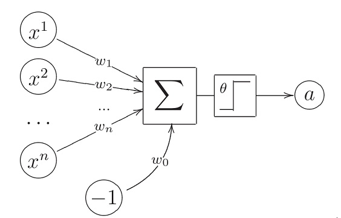
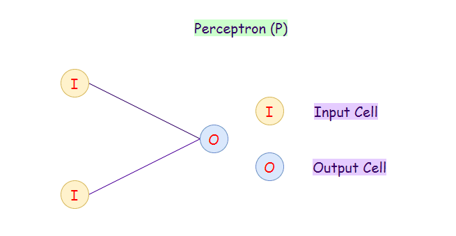
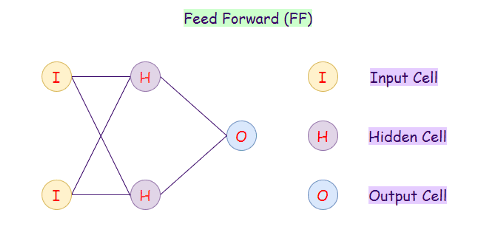
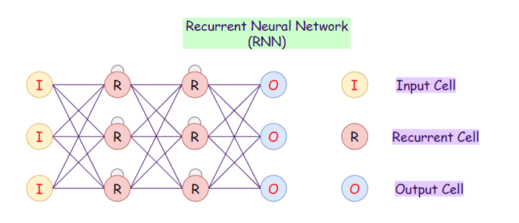
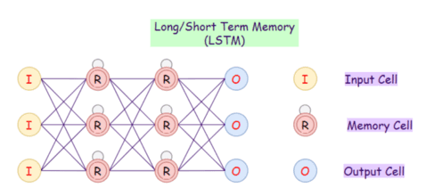
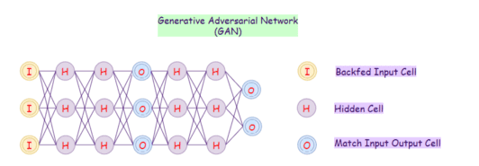

Нейронные сети
Нейронная сеть (искусственная нейронная сеть, ИНС) - это математическая модель, а также её программное или аппаратное воплощение, построенная по принципу организации и функционирования сетей нервных клеток живого организма.
Это понятие возникло при изучении процессов, протекающих в мозге, и при попытке смоделировать эти процессы. Первой формальной моделью нейронных сетей была модель МакКаллока-Питтса, уточнённая и развитая Клини. Именно благодаря им были заложены теоретические основы нейроматематики в начале 1940-х годов. Впервые было установлено, что ИНС могут выполнять любые логические операции и вообще любые преобразования, реализуемые дискретными устройствами с конечной памятью.
В ходе их работы были получены следующие результаты:
- разработана модель нейрона как простейшего процессорного элемента, выполняющего вычисление переходной функции от скалярного произведения вектора входных сигналов и вектора весовых коэффициентов;
- предложена конструкция сети таких элементов для выполнения логических и арифметических операций;
- сделано основополагающее предположение о том, что такая сеть способна обучаться, распознавать образы, обобщать полученную информацию.
Как работают нейросети?
На вход поступает какая-то информация или запрос. Входной слой нейронной сети обрабатывает её и переводит в понятный машине вид — в числовые наборы. Затем эти наборы передаются нейронам.
Нейроны по формулам, которые в них заложены, обрабатывают информацию. Как именно реагировать на разные детали этих данных, определяют коэффициенты — их нейросеть разработала при обучении. По сути, эти коэффициенты работают как память: нейросеть «вспоминает», как следует реагировать на похожие кластеры информации с известными ей признаками.
Данные передаются дальше по нейронной сети, проходит разные слои и типы нейронов. В конечном итоге на последнем слое нейросеть может сделать вывод. На выход подаётся её финальная «реакция» на запрос.
Виды нейросетей
Существует множество разновидностей ИНС, это вызвано нуждой в реализации некоторых проектов и выполнении поставленной задачи.
1. Перцептрон
Модель перцептрона (Perceptron) также известна как однослойная нейронная сеть состоит всего из двух слоёв:
- Входной слой (Input Layer)
- Выходной слой (Output Layer)
Перцептрон принимает входные данные и вычисляет веса каждого нейрона. После этого линейная комбинация весов передаётся функции активации (сигмоидальная функция) для классификации.
2. Сеть прямого распространения
Сеть прямого распространения (Feed Forward) — это искусственная нейронная сеть, в которой нейроны никогда не образуют цикла. В этой нейронной сети все нейроны расположены в слоях, где входной слой принимает исходные данные, а выходной слой генерирует результат в заданном виде. Помимо входного и выходного слоев, есть еще скрытые слои — это слои, которые не имеют связи с внешним миром. В нейронной сети прямого распространения каждый нейрон одного слоя связан с каждым нейроном на следующем слое. Слои с такими нейронами называются полносвязными (fully-conected, dense).
Увеличение числа скрытых слоев делает из нее глубокую нейронную сеть прямого распространения (Deep Feed-forward, DFF). Для обновления значений весов используется алгоритм обратного распространения ошибки (backpropagation).
Применение DFF и FF:
- Сжатие данных
- Распознавание образов
- Компьютерное зрение
- Распознавание речи
- Распознавание рукописных символов
3. Сеть радиальных базисных функций
Сеть радиальных базисных функций (radial basis function network, RBFN) обычно используются для задач аппроксимации. Эта сеть обладает высокой скоростью обучения. Архитектура такая же как и у сети прямого распространения, но основное различие состоит в том, что RBFN использует радиально-базовую функцию в качестве функции активации.
RBFN определяет, насколько далеко сгенерированный результат радиально-базовой функции находится от целевого значения.
Применение RBFN:
- Аппроксимация функций
- В системах автоматического управления
- Классификация
- Прогнозирование временных рядов
4. Рекуррентные нейронные сети
В рекуррентных нейронных сетях (Recurrent Neural Network, RNN) каждый из нейронов в скрытых слоях получает на вход данные с определённой задержкой во времени. Также рекуррентная нейронная сеть обладает состоянием, приобретённое при обработки предыдущих элементов последовательности. Это можно сравнить со случаем, если мы пытаемся предсказать следующее слово в предложении, то нам нужно сначала узнать предыдущие слова. RNN имеют внутренние циклы (петли), поэтому решение выносится при учёте самих данных, а также текущего состояния сети.
Проблема этой нейронной сети — низкая скорость обучения. А также она не хранит давнюю информацию, т.е. не работает с учетом долгосрочной перспективы. Обычная рекуррентная сеть, как и перцептрон, нужна скорее для проектирования более сложных архитектур (LSTM, GRU).
5. Долгая краткосрочная память
При большом объёме данных RNN становятся просто непригодными, поскольку запоминают скорее последнюю информацию и забывают о информации, полученной давным-давно. Эта проблема схожа с затухающими градиентами в сетях прямого распространения. Поэтому на замену обычным рекуррентным сетям приходит сеть с долгой краткосрочной памятью (Long Short-Term Memory, LSTM).
Нейронные сети LSTM обладают памятью, т.е. текущая информация сохраняется для последующего использования в будущем. LSTM является революционной технологией, которая используется во многих приложениях, например, в виртуальном ассистенте Siri от Apple.
Применение LSTM:
- Распознавание речи
- Оптическое распознавание символов
- Генерация текстов
- Прогнозирование временных рядов
- Машинный перевод
- Вопросно-ответная система, чат-боты и NLP
6. Управляемые рекуррентные нейроны
Управляемый рекуррентный блок (Gated Recurrent Unit, GRU) — это разновидность LSTM. Сеть GRU имеет два вентиля (сброса и обновлений), в то время как у LSTM их три (входной, выходной и вентиль забывания). Поэтому архитектура и применение такие же, поскольку отличия только во внутренней реализации.
GRU использует меньше параметров обучения и, следовательно, использует меньше вычислительных ресурсов, выполняется и обучается быстрее, чем LSTM. Если входная последовательность большая или точность очень важна, то обычно используется LSTM, тогда как для меньшего потребления памяти и более быстрой работы используется GRU.
7. Свёрточные нейронные сети
Свёрточные нейронные сети (Convolutional Neural Network, CNN) — это нейронные сети, которые показали высокую точность в классификации и кластеризации изображений, а также в распознавании объектов, хотя применяется практически везде. CNN состоят из двух видов слоёв: слои свёртки и пулинга. Слой пулинг необходим для уменьшения размерности. Преимущество свёрточных сетей заключается в их свойстве инвариантности, т.е. объект на изображении может находиться в любом месте, но сеть его все равно найдёт.
Применение CNN:
- Распознавание образов
- Компьютерное зрение
- Видеоанализ
- NLP
8. Генеративно-состязательные сети
Генеративно-состязательные сети (Generative Adversarial Network, GAN) учатся генерировать новые данные статистически неотличимых от исходных. Например, если мы обучим нашу модель GAN на фотографиях, то обученная модель сможет создавать новые фотографии, которые выглядят схоже с исходными. Или, например, генерировать картины в стиле Ван Гога или Пикассо.
Применение GAN:
- Генерация изображений и анимаций
- Редактирование лиц
Например: эффект старения или нахождение похожего человека
- Кибербезопасность